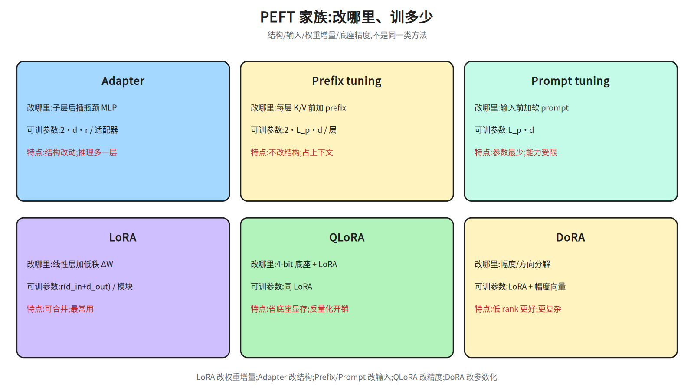
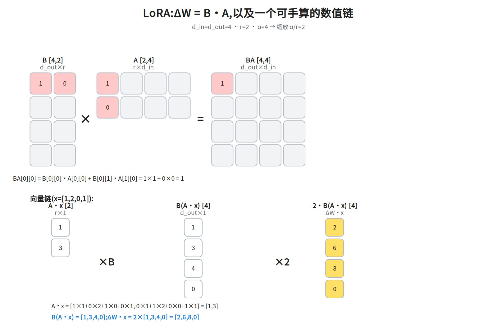
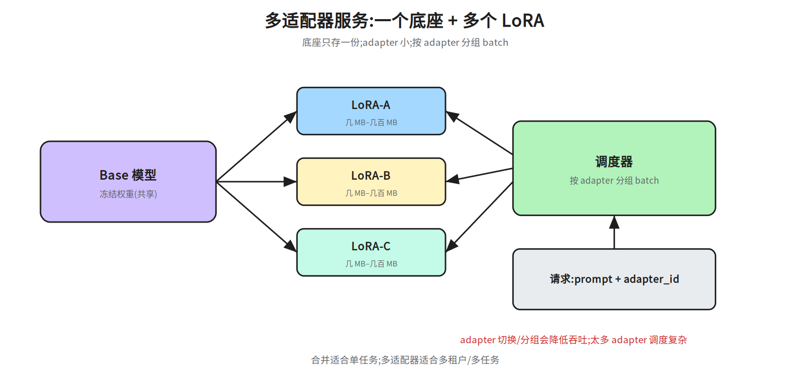
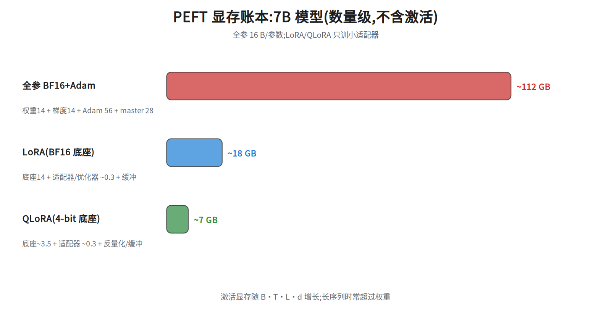

第十五层 · PEFT 与 LoRA —— 用 0.1% 参数做微调¶
本层回答:全参数微调为什么贵?Adapter / prefix / prompt tuning / LoRA / QLoRA / DoRA 各自改哪里?rank、alpha、target modules 怎么选?多个 adapter 怎么服务?
前置(按节) - §1–§2:先看
notes/08_alignment.md §1(SFT)与notes/03_block.md(线性层/Block 结构)。 - §3 LoRA 数学:只需矩阵乘法与维度;正文给数值例子。 - §4 QLoRA/DoRA:先看 §3;量化基础见notes/22_inference_systems.md §8。 - §5:rank/alpha/target 本层自洽,不需要外部笔记;唯一外链是末条「训练数据」用的notes/08_alignment.md §1(SFT 数据/格式)。 - §6:合并/多适配器本层自洽,不需要外部笔记。 - §7:先看notes/22_inference_systems.md §3(显存账本)。本层全节只算显存,不做 roofline/算术强度/带宽分析,所以notes/06_inference.md §5的 memory-bound 判据不必先读,留作 §7 之后对照推理瓶颈用。建议路径(2 次 × 45 分钟) - 第 1 次(必学):§1 为什么 PEFT + §2 家族对比(51b)+ §3 LoRA 数学(51a)。 - 第 2 次(必学):§4 QLoRA/DoRA + §5 rank/alpha/target + §6 合并/多适配器(51c)+ §7 显存账本(51d)。
0. 依赖图(学习顺序)¶
graph TD
A["全参数微调显存大<br/>(notes/08)"] --> B["PEFT:只训少量参数"]
B --> C["Adapter / Prefix / Prompt tuning"]
B --> D["LoRA<br/>低秩增量 ΔW=BA"]
D --> E["QLoRA<br/>4-bit 底座 + LoRA"]
D --> F["DoRA<br/>幅度/方向分解"]
D --> G["合并 / 多适配器服务"]
E --> H["单卡微调大模型"]
G --> I["多租户/多任务部署"]
D --> J["rank / alpha / target modules<br/>(§5)"]
J --> K["显存账本<br/>(§7, 51d)"]
E --> K1. 为什么需要 PEFT¶
全参数微调 7B 模型,显存不只是权重:
再加激活、临时缓冲,单卡很难放下;多卡还要通信。PEFT(Parameter-Efficient Fine-Tuning)只训练少量新增参数,底座冻结:
- 显存从“权重+梯度+优化器”降到“权重(可量化)+小适配器”;
- 一个底座可以挂多个任务适配器,便于多租户/多任务;
- 降低灾难性遗忘(底座不变,只学增量)。
2. PEFT 家族:改哪里、训多少¶

| 方法 | 改哪里 | 可训参数 | 特点 |
|---|---|---|---|
| Adapter | 每个子层后插入瓶颈 MLP(d→r→d) |
2·d·r/适配器 |
结构改动;推理多一层串行 |
| Prefix tuning | 每层 K/V 前加可学习 prefix | 2·L_p·d/层 |
不改结构;占上下文 |
| Prompt tuning | 输入前加软 prompt 向量 | L_p·d |
参数最少;能力受限于输入 |
| LoRA | 给线性层加低秩增量 BA |
r(d_in+d_out)/模块 |
不改结构;可合并;最常用 |
| QLoRA | 底座 4-bit 量化 + LoRA | 同 LoRA | 省底座显存;反量化有开销 |
| DoRA | 把权重分解为幅度 + 方向,LoRA 调方向 | 比 LoRA 多一个幅度向量(每个输出通道 1 个标量,共 d_out 个,即 +d_out 参数) |
低 rank 下通常更好;实现更复杂 |
符号:d=隐藏维;r=Adapter 瓶颈维/LoRA 秩;L_p=prefix 或 soft prompt 长度;d_in/d_out=线性层输入/输出维。
一句话:Adapter/prefix/prompt 改“结构或输入”,LoRA 改“权重增量”,QLoRA 改“底座精度”,DoRA 改“权重参数化”。
3. LoRA:低秩增量¶
3.1 公式¶
对某个线性层 W [d_out, d_in],LoRA 不直接改 W,而是学一个低秩增量:
A、B是可训练矩阵;W冻结。α/r是缩放:改变 rank 时保持增量尺度大致不变。- 初始化:
A随机(如 Kaiming),B=0→ 初始ΔW=0,不破坏底座。 - 参数量:
r(d_in+d_out),远小于d_in·d_out。 - 为什么低秩够用:LoRA 论文假设微调时的权重更新具有很低的 intrinsic rank(该术语溯源到 Aghajanyan 等人对 intrinsic dimension 的研究,LoRA 是借用这一观察,不是提出者),任务适配不需要改满秩空间;这不是定理,rank 太小/任务需要大幅改变表示时会欠拟合。
3.2 数值例子¶
取 d_in=d_out=4, r=2, α=4,缩放 α/r=2:
A [2,4] = [[1,0,1,0],
[0,1,0,1]]
B [4,2] = [[1,0],
[0,1],
[1,1],
[0,0]]
BA [4,4] = [[1,0,1,0],
[0,1,0,1],
[1,1,1,1],
[0,0,0,0]]
ΔW = 2·BA = [[2,0,2,0],
[0,2,0,2],
[2,2,2,2],
[0,0,0,0]]
输入 x=[1,2,0,1]:
A x = [1·1+0·2+1·0+0·1, 0·1+1·2+0·0+1·1] = [1, 3]
B(Ax) = [1·1+0·3, 0·1+1·3, 1·1+1·3, 0] = [1, 3, 4, 0]
ΔW x = 2·[1,3,4,0] = [2, 6, 8, 0]
若 Wx=[0,0,0,0],则 h=[2,6,8,0];LoRA 只加了这一份低秩增量。

3.3 真实规模¶
Llama-2 7B:d=4096,32 层。若只给 q、v 加 LoRA,r=16:
若 q/k/v/o 全加:16.78M ≈ 0.24%。实际常用 rank 8–64、target modules 覆盖 q/k/v/o + MLP。
4. QLoRA 与 DoRA¶
4.1 QLoRA¶
QLoRA 把冻结底座量化到 4-bit NF4,再在上面加 LoRA:
- NF4:按权重分布设计的 4-bit 浮点,比普通 INT4 更适合正态权重;
- double quantization:对量化常数再量化,进一步省显存;
- paged optimizers:把优化器状态分页到 CPU,缓解峰值显存;
- 计算时反量化到 BF16 做矩阵乘,LoRA 参数保持 BF16/FP32。
7B 底座 4-bit 约 7B×0.5 B ≈ 3.5 GB(不含额外开销),加上 LoRA/激活,单卡 24GB 可以微调 7B–13B(取决于序列长度/batch)。
4.2 DoRA¶
DoRA 把权重分解为幅度和方向:
W0冻结,BA是 §3 的 LoRA 低秩增量(rankr);DoRA 只用它更新「方向」;m是可训练的幅度向量:每个输出通道 1 个标量(论文的 column-wise,m ∈ R^{1×k},k = 输出维);在W0 [d_out, d_in]布局下||·||_c就是沿dim=1的范数,m长度 =d_out;- 参数量 = LoRA 的
r(d_in+d_out)+d_out; - 低 rank 时通常比 LoRA 更接近全参数微调,但前向更复杂、训练稍慢。
面试口径:QLoRA 省的是底座显存,不省 LoRA 计算;DoRA 改的是参数化方式,不是量化。
5. rank / alpha / target modules 怎么选¶
- rank r:8–64 常见;任务越复杂/数据越多,rank 可以大一点;太大接近全参数,失去 PEFT 意义。
- alpha:常见
α=r或α=2r;缩放α/r控制增量强度。改 rank 时保持α/r大致不变,减少调参。 - target modules:只加 q/v 最省;q/k/v/o 覆盖更好;MLP(gate/up/down)对知识/风格任务有帮助,但参数更多。
- 秩的变体:rsLoRA 用
α/√r稳定大 rank;AdaLoRA 动态分配 rank;多 LoRA 合并可能冲突,需按任务隔离/正交化。 - dropout:LoRA 层可加 dropout,小数据防过拟合。
- 学习率:LoRA 常用比全参微调更大的 LR(如 1e-4–3e-4),因为只训小矩阵;具体按任务调。
- 训练数据:PEFT 不改变“数据质量决定上限”;SFT 数据/格式仍按
notes/08_alignment.md §1。
6. 合并与多适配器服务¶
6.1 合并(merge)¶
推理时可以把 LoRA 合并进底座:
- 合并后推理没有额外延迟,适合单任务部署;
- 合并要在 FP32 做(在 FP16/BF16 里做加法会累积误差),合并后再存回 BF16/FP16 供部署;
- 需要保留未合并底座,以便切换/回滚。
6.2 多适配器服务¶

一个底座 + 多个 adapter:
- 每个请求带
adapter_id;调度器按 adapter 分组 batch,或使用支持 multi-LoRA 的引擎(vLLM 等); - 底座只存一份,adapter 很小(几 MB–几百 MB),适合多租户/多任务;
- 代价:adapter 切换、分组 batching 会降低吞吐;adapter 太多时显存/调度变复杂。
7. 显存账本¶

以 7B 为例(数量级,不含激活):
| 方案 | 权重 | 梯度/优化器 | 总计(约) |
|---|---|---|---|
| 全参 BF16 + Adam | 14 GB | 14 + 56 + 28 = 98 GB | 112 GB |
| LoRA(BF16 底座) | 14 GB | 适配器 ~0.27 GB | ≈14.3 GB(14 + 0.27) |
| QLoRA(4-bit 底座) | ~3.5 GB | 适配器 ~0.27 GB | ≈3.8 GB(3.5 + 0.27) |
激活显存随
B·T·L·d增长(B=batch、T=序列长、L=层数、d=隐藏维),按每元素 2 B(BF16)、每层存十来个B·T·d张量粗估:7B(L=32,d=4096)、B=4,T=2048时单个张量 ≈67 MB,单层 ≈0.7 GB,32 层 ≈20+ GB,长序列确实会超过 14 GB 权重;要配合梯度检查点(就是前置清单里的「激活重算」,用算力换激活显存)或序列并行(把序列维切到多卡,每卡只存 1/N 的激活分片;省激活、不省权重,可与激活重算叠加)。具体数字随实现/精度变化,报告时写清口径。适配器口径:0.27 GB 是按 q/k/v/o 全加(16.78M 参数 × 16 B ≈ 268 MB)算的;若用 §3.3 的 q+v(8.39M),同一算法只有 ≈134 MB ≈ 0.13 GB,LoRA 总计随之 ≈14.1 GB。 这 16 B/参数沿用 §1 的构成(权重 2 B + 梯度 2 B + Adam m/v 8 B + FP32 master 4 B):底座虽冻结,适配器自己的梯度、两个矩和 FP32 master 一样不能省,所以同一套 16 B 可以直接套到 LoRA 参数上。
复算口径:「总计」列 = 权重 + 梯度/优化器,逐列可加(全参 14+98=112;LoRA 14+0.27≈14.3;QLoRA 3.5+0.27≈3.8),不含激活。真实峰值 = 总计 + 激活 + 运行时开销约 1–6 GB(CUDA context、反量化临时缓冲、显存碎片、通信 buffer),所以 LoRA 实测常见 15–20 GB、QLoRA 常见 5–10 GB——那是
B=1、T=512量级下的口径,激活只有几 GB;换成上一段的B=4、T=2048代入同一算法,则是 LoRA ≈14.3+21.5+1–6 ≈37–42 GB、QLoRA ≈3.5+0.27+21.5+1–6 ≈26–31 GB。两组数并不矛盾,差别只在 B/T(以及是否开梯度检查点);报告时必须把 B/T、精度、是否重算一起写清。
8. 面试要点¶
- 全参微调为什么贵? → 16 bytes/参数:权重+梯度+Adam m/v+FP32 master;7B 约 112GB。
- LoRA 的公式? →
h=Wx+(α/r)BAx;A[r,d_in]、B[d_out,r],只训r(d_in+d_out)参数。 - 为什么 B 初始化为 0? → 初始
ΔW=0,不破坏底座;A 随机初始化是为了让 B 第一步就有非零梯度(破对称)。注意B=0时∂L/∂A = Bᵀ(∂L/∂h)xᵀ = 0,A 首步收不到梯度;若 A、B 都置 0,两者梯度全为 0、训练不动。 - rank/alpha 怎么选? → r 8–64;α=r 或 2r;保持 α/r 尺度,按任务调。
- target modules 选哪些? → q/v 最省;q/k/v/o 更好;MLP 对知识/风格有用但更贵。
- QLoRA 省什么? → 底座 4-bit NF4 + double quant + paged optim;省权重显存,计算仍要反量化。
- DoRA 和 LoRA 的区别? → DoRA 把权重拆成幅度
m与方向,更新方向的是公式里的BA(§4.2),m是额外的可训向量;LoRA 没有这层分解,只学BA整体(§2 的说法是「DoRA 改的是权重参数化」,不是换个 loss)。低 rank 通常更好,但前向更复杂、训练稍慢。 - LoRA 能合并吗? → 能,
W'=W+(α/r)BA;合并后无额外延迟,注意精度。 - 多适配器怎么服务? → 一个底座 + 多 adapter,按 adapter 分组 batch;支持 multi-LoRA 的引擎。
- PEFT 的局限? → 不改变数据质量上限;rank 太小欠拟合;多 adapter 调度/显存有成本。
常见坑¶
- 以为 LoRA 一定比全参好:数据/任务不匹配时,LoRA 可能欠拟合;rank/模块要调。
- 把
α当独立超参:真正影响增量尺度的是α/r。 - 只加 q/v 却期待知识注入:知识/风格任务常需要 MLP 模块。
- 合并时用低精度:FP16 合并误差会累积;用 FP32 完成合并、再存回 BF16/FP16,并抽样验证误差(≤1e-4)。
- 多 adapter 不做分组:每请求切 adapter 会拖垮吞吐。
- 忽略激活显存:长序列微调时,激活可能比权重更大。
- 把 QLoRA 当“免费”:反量化/分页有开销,训练速度可能下降。
动手清单¶
- LoRA 复算:用 §3.2 的 A/B/x,手算
Ax、B(Ax)、ΔWx;验收:与正文一致。 - 参数量计算器:输入
d,r,target_modules,layers,算 LoRA 参数量与占比;验收:7B q/v r=16 ≈8.39M。 - 合并验证:训练一个小 LoRA,合并后比较
W'x与Wx+ΔWx;验收:误差在 1e-4 内。 - 显存对比:同一 7B 模型跑全参/LoRA/QLoRA 的最小配置,记录峰值显存;验收:解释差异来源。
相关图¶
51a_lora_math · 51b_peft_family · 51c_multi_adapter · 51d_peft_ledger
(均在 diagrams/,横竖双版本)
下一步¶
第十六层 · Agent RL:Agent 循环、rollout 引擎、环境扩展、reward/verifier、异步 RL、GRPO/PPO、权重同步、沙箱与成本。